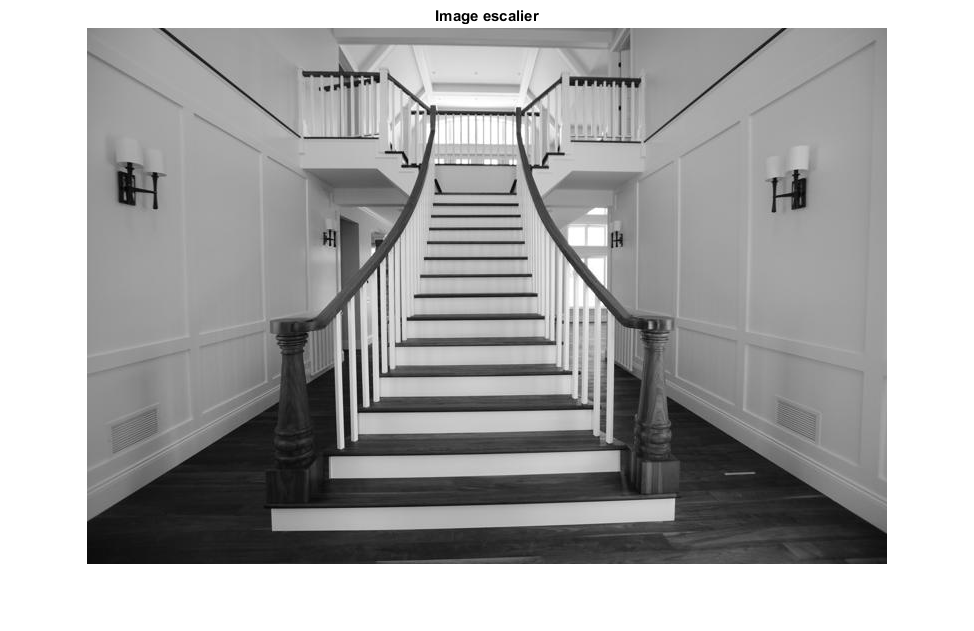
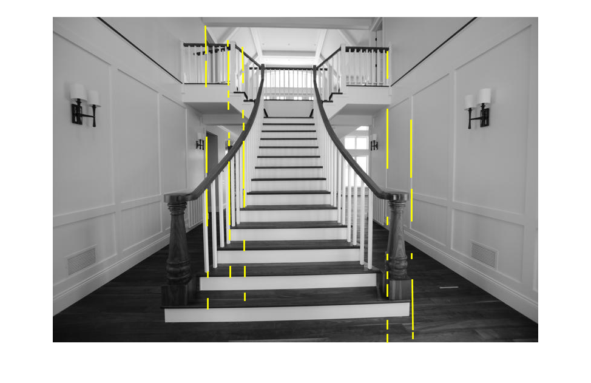
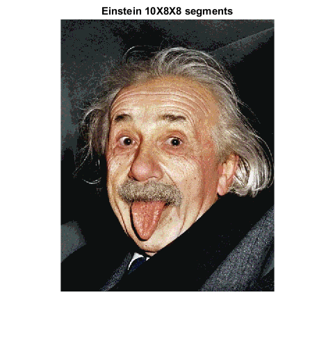
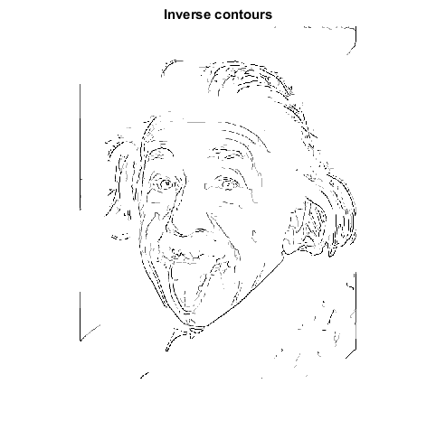
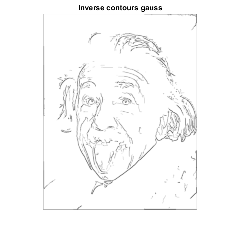

Contents
type Filtre_Canny.m; type Calculer_Precision.m; type ObtenirLUT.m; type Segmenter_Couleur.m; type Split_Couleurs.m;
function [ resultat ] = Filtre_Canny( image, masqueGaussien, treshold )
tresholdFaible = 1;
% 1- On doit lisser l'image pour réduire le bruit afin de ne pas fausser
% le résultat de détection de contour
imageLisse = imfilter(image, masqueGaussien);
%2- On trouve le gradient, car Canny recherche les zones où la variation
% de l'intensité lumineuse est la plus importante
[Gmag,Gdir] = imgradient(imageLisse);
%3- On supprime les valeurs qui ne sont pas des maximums locaux.
rows = size(image,1);
cols = size(image,2);
for row = 1:rows
for col = 1:cols
voisin1 = 0;
voisin2 = 0;
centre = Gmag(row,col);
direction = abs(Gdir(row,col)); %On veut seulement avoir à vérifier 1 côté
%Les angles utilisés sont donnés dans les notes de cours
%Sens direction vertical
if(direction <= 22.5 || direction > 157.5)
if(col > 1)
%Voisin gauche
voisin1 = Gmag(row, col-1);
end
if(col < cols)
%Voisin droit
voisin2 = Gmag(row, col+1);
end
end
%Sens direction horizontal
if(direction > 67.5 && direction <= 112.5)
if(row > 1)
%Voisin bas
voisin1 = Gmag(row-1, col);
end
if(row < rows)
%Voisin haut
voisin2 = Gmag(row+1, col);
end
end
%Sens direction diagonal gauche droite
if(direction > 22.5 && direction <= 67.5)
if(row > 1 && col < cols)
%Voisin bas gauche
voisin1 = Gmag(row-1, col+1);
end
if(row < rows && col > 1)
%Voisin haut droit
voisin2 = Gmag(row+1, col-1);
end
end
%Sens direction diagonal droite gauche
if(direction > 112.5 && direction <= 157.5)
if(row > 1 && col > 1)
%Voisin bas gauche
voisin1 = Gmag(row-1, col-1);
end
if(row < rows && col < cols)
%Voisin haut droit
voisin2 = Gmag(row+1, col+1);
end
end
%Finalement, on garde la valeur maximal du voisinage
if(centre > voisin1 && centre > voisin2)
image(row,col) = centre;
else
image(row,col) = 0;
end
end
end
%4- Double seuillage: pour se débarasser des potentiels faux contours, dûs
%aux bruits restants ou variation de couleur, on utilise le double
%seuillage
%- tous les pixels superieurs au seuil maximal défini sont des contours
%forts.
%- tous les pixels inférieurs au seuil minimal défini sont supprimés.
%- tous les pixels situés entre ces deux valeurs sont considérés comme des
%contours faibles.
resultat = image > treshold; %On garde les valeurs plus grandes que le seuil
%5- Detection de contour par hystérésis: Si un contour faible est relié
%à un contour fort, il est ajouté à l'image finale. - Sinon le contour
%faible est supprimé.
for row = 1:rows
for col = 1:cols
%On analyse seulement les contours faibles
if(image(row, col) < treshold && image(row, col) > tresholdFaible)
if(row > 1 && row < rows && col > 1 && col < cols)
%Si le contour faible touche à un contour fort
if(resultat(row-1, col) || resultat(row+1, col) || resultat(row, col-1) || resultat(row, col+1) || resultat(row-1, col-1) || resultat(row+1, col+1) || resultat(row-1, col+1) || resultat(row+1, col-1))
%On le garde
resultat(row, col) = 1;
else
%On le supprime
resultat(row, col) = 0;
end
end
end
end
end
end
function [Performance, TPF, TFN] = Calculer_Precision(image, imageReference)
resultat = image&imageReference;
ContoursDetectes = sum(image(:));
ContoursReferences = sum(imageReference(:));
ContoursCorrects = sum(resultat(:));
FauxPositifs = ContoursDetectes - ContoursCorrects;
FauxNegatifs = ContoursReferences - ContoursCorrects;
Performance = ContoursCorrects/(ContoursCorrects+FauxPositifs+FauxNegatifs);
TPF = FauxPositifs/(ContoursCorrects+FauxPositifs+FauxNegatifs);
TFN = FauxNegatifs/(ContoursCorrects+FauxPositifs+FauxNegatifs);
end
function LUT = ObtenirLUT(nbSegments)
maxIntensity = 255;
% Tableau contenant les bornes inferieures et superieures de chaque
% segment (d'ou nbSegments+1)
delimiters = linspace(0,maxIntensity,nbSegments+1);
% Preallocation pour rapidite sur recommadation de notre ami matlab
avgValues = zeros(1,nbSegments);
for v = 1:numel(delimiters)
if v < numel(delimiters)
% Calcul des valeurs moyennes
avgValues(v) = (delimiters(v)+delimiters(v+1))/2;
end
end
preLUT = repelem(uint8(ceil(avgValues)),ceil(maxIntensity/nbSegments));
% Il faut s'assurer que les LUT ont bien 256 valeurs
if numel(preLUT) > 256
preLUT = preLUT(1:256);
elseif numel(preLUT) < 256
nbElements = 256 - numel(preLUT);
suffix = ones(1,nbElements)*max(avgValues);
preLUT = [preLUT suffix];
end
LUT = preLUT;
end
function segImg = Segmenter_Couleur(img,LUT_R,LUT_G,LUT_B)
% Extraire chaque couleur separement
[R,G,B] = Split_Couleurs(img);
% Creer de nouvelles composantes selon les LUT transmises
R_seg = intlut(R,LUT_R);
G_seg = intlut(G,LUT_G);
B_seg = intlut(B,LUT_B);
segImg = cat(3,R_seg,G_seg,B_seg);
end
function [R,G,B] = Split_Couleurs(img)
% Extraire chaque couleur separement
R = img(:,:,1);
G = img(:,:,2);
B = img(:,:,3);
end
Exercice 1: Restauration d’image
Numero 1
%Charger l'image voiture = imread('Formula_Ford.png'); %Afficher l'image figure() imshow(voiture) title('Image originale') %Numéro 2 % h = fspecial('motion', len, theta): len = 30 et theta = 0 ce qui % équivaut à une motion horizontal de 30 pixels % Les valeurs de 31 et 24 ont été obtenues par essai-erreur h = fspecial('motion', 31, 24); %Numéro 3 nouvelleImage = deconvwnr(voiture, h, 0); %Afficher l'image figure() imshow(nouvelleImage) title('Filtre inverse') % Même s'il est difficile de visualiser quoi que ce soit sur l'image % obtenue, on peut remarquer la silhouette de la voiture et l'impression % que nous avons est que le déplacement de 30pixels à été effectué et % résulte en une série de barre verticale. L'image possède beaucoup de % bruit et est probablement le résultat d'un paramètre qui n'est pas % adéquat (voir K, comme K est le ratio du bruit et du signal, la valeur 0 % n'est pas adéquate, car il est faux de prétendre qu'il n'y a pas de % bruit dans l'image). %Numéro 4 noise_var = 1e-3; I = im2double(voiture); estimated_nsr = noise_var / var(I(:)); %Numéro 5 plaqueVisible = deconvwnr(voiture, h, estimated_nsr); %Afficher l'image figure() imshow(plaqueVisible) title('Image plaque visible') %Le numéro de la plaque du criminel est FF12FMC
Warning: Image is too big to fit on screen; displaying at 67% Warning: Image is too big to fit on screen; displaying at 67% Warning: Image is too big to fit on screen; displaying at 67%
Exercice 2: Segmentation d’image
%Numéro 1 %Charger l'image escalier = imread('escaliers.jpg'); %Afficher l'image figure() imshow(escalier) title('Image escalier') %Numéro 2 gaussien = fspecial('gaussian', 3, 0.5); resultat = Filtre_Canny(escalier, gaussien ,20); figure() imshow(resultat) title('Image Filtre Canny') %Numéro 3 % Voir Calculer_Precision.m %Numéro 4 escalierReference = imread('escaliers_TrueSeg.jpg') > 128; resultat = Filtre_Canny(escalier, gaussien, 79); [Performance, TPF, TFN] = Calculer_Precision(resultat, escalierReference); %On remarque en faisant varier le seuil que sa valeur optimale oscille %autour de 79. En effet, lors de notre première utilisation du filtre %Canny, nous utlisions un seuil de 20 qui nous paraissait donner un %résultat convenable. Suite à l'analyse, nous avons passer d'une %performance de 19.41% à 27.26% en passant d'une seuil de 20 à 79. Nous %acceptions ainsi trop de faux contours. %Numéro 5 escalier = imread('escaliers.jpg'); gaussien = fspecial('gaussian', 3, 0.5); BW = Filtre_Canny(escalier, gaussien ,20); [H,theta,rho] = hough(BW,'Theta', -1:0.5:1); P = houghpeaks(H,5,'threshold',ceil(0.3*max(H(:)))); lines = houghlines(BW,theta,rho,P,'FillGap',5,'MinLength',7); figure, imshow(escalier), hold on max_len = 0; for k = 1:length(lines) xy = [lines(k).point1; lines(k).point2]; plot(xy(:,1),xy(:,2),'LineWidth',2,'Color','yellow'); end 
Exercice 3: Segmentation par couleur
% Numero 1 %Charger l'image figure(); chateau = imread('chateau.jpg'); imshow(chateau); title('Chateau original'); % Numero 2 % Voir ObtenirLUT.m % Numero 3 % Voir Segmenter_Couleur.m % Numero 4 LUT = ObtenirLUT(8); % On utilise la meme LUT pour chaque couleur puisqu'il y a 8 segments pour % chaque couleur chateau_seg = Segmenter_Couleur(chateau,LUT,LUT,LUT); figure(); imshow(chateau_seg); title('Chateau segmente'); imwrite(chateau_seg,'chateau_seg.jpg'); %chateauComp = imread('imgCompare.png'); %figure(); %imshow(chateauComp); %title('Comparaison des formats d''image') % Considerant que l'image originale necessite 8 bits pour encoder chaque % couleur, donc 24 bits pour chaque pixel, ceci résulte donc en un espace % nécessaire de 1920x1280x24bits = 58 982 400 bits. Or, pour l'image % segmentée, nous avons besoin de 3 bits par couleur, donc 9 bits par % pixels, ce qui fait donc un total de 22 118 400 bits. L'image segmentée % nécessite donc 37.5% de la quantité d'information nécessaire pour % représenter l'image originale. h = numel(chateau(:,1,1)); w = numel(chateau(1,:,1)); % Numero 5 % Tentative 2 seg bleus, 2 rouges, 2 verts r = ObtenirLUT(2); g = ObtenirLUT(2); b = ObtenirLUT(2); chateau_tres_seg = Segmenter_Couleur(chateau,r,g,b); figure(); imshow(chateau_tres_seg); title('Image devinette'); % On peut voir qu'il n'y a que 2 niveaux de bleus, tres peu de niveaux de % rouge ainsi que tres peu de niveaux de vert. En essayant une segmentation % de 2 pour chaque couleur, nous obtenons donc l'effet voulu.
Warning: Image is too big to fit on screen; displaying at 33% Warning: Image is too big to fit on screen; displaying at 33% Warning: Image is too big to fit on screen; displaying at 33%
Exercice 4: Toon/Paint shading
% Numero 1 einstein = imread('Albert-Einstein.jpg'); figure(); imshow(einstein); title('Einstein original'); % Numero 2 %lut5 = ObtenirLUT(5); % Test comme dans l'enonce lut8 = ObtenirLUT(8); lut10 = ObtenirLUT(10); einstein5 = Segmenter_Couleur(einstein,lut10,lut8,lut8); figure(); imshow(einstein5); title('Einstein 10X8X8 segments'); % Numero 3 gauss = fspecial('gaussian',[7 7],1); einstein5_gauss = convn(einstein5,gauss, 'same'); figure(); imshow(uint8(einstein5_gauss)); title('Einstein 10X8X8 gaussé'); % Numéro 4 [einsteinR, einsteinG, einsteinB] = Split_Couleurs(einstein5_gauss); threshold = 110; einsteinR_gauss = Filtre_Canny(einsteinR, gauss ,threshold); einsteinG_gauss = Filtre_Canny(einsteinG, gauss ,threshold); einsteinB_gauss = Filtre_Canny(einsteinB, gauss ,threshold); moy = (einsteinR_gauss + einsteinG_gauss + einsteinB_gauss)/3; figure(); imshow(moy); title('Contours'); inverse = imcomplement(moy); figure(); imshow(inverse); title('Inverse contours'); % Numero 5 contours_gauss = conv2(inverse,gauss, 'same'); figure(); imshow(contours_gauss); title('Inverse contours gauss'); % Numero 6 einsteinR_fin = double(einsteinR).*double(contours_gauss); einsteinG_fin = double(einsteinG).*double(contours_gauss); einsteinB_fin = double(einsteinB).*double(contours_gauss); cartoonImg = cat(3,uint8(einsteinR_fin), uint8(einsteinG_fin), uint8(einsteinB_fin)); figure(); imshow(cartoonImg) title('Image cartoon finale');
Warning: Image is too big to fit on screen; displaying at 67% Warning: Image is too big to fit on screen; displaying at 67% Warning: Image is too big to fit on screen; displaying at 67% Warning: Image is too big to fit on screen; displaying at 67% Warning: Image is too big to fit on screen; displaying at 67% Warning: Image is too big to fit on screen; displaying at 67% Warning: Image is too big to fit on screen; displaying at 67%  